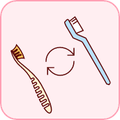
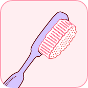
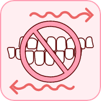
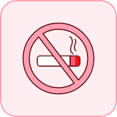
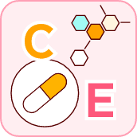

1,000
알림
구강관리 스코어
총합 점
콘텐츠 제공 : 
-
치아0 100045.3 이용자 평균

-
잇몸0 100067.5 이용자 평균

-
시린이0 100064.8 이용자 평균
-
입냄새0 100082.4 이용자 평균
-
관리0 100034.8 이용자 평균
0%
100%
현재 구강관리 경고단계로 치아 관리에 힘써 주세요.
잇몸이 부어있거나 출혈, 고름 등이 나오나요? 원인과 관리방법을 확인해보세요!
원인분석
잇몸질환이 있는 경우 양치질 시 잇몸에서 피가 나거나 잇몸이 붓고 아플 수 있습니다. 잇몸 건강 관리가 필요합니다.
잇몸 염증에 영향을 주는 요인
- 스트레스, 피로
- 수면부족
- 임신 혹은 생리기간
- 잇몸 질환 유발균
관리방법
-

칫솔 정기교체로
잔여 세균 제거 -

부드러운
미세모 사용 -
 가글
가글
-  이갈이 금지
-
 이 꽉무는 습관 개선
이 꽉무는 습관 개선
-  금연
- 수면 습관 개선
- 스트레스 줄이기
-  비타민 섭취
주의사항
잇몸질환은 가족력이 있을 수 있으며, 가족 구성원간의 교차 감염이 발생할 수 있으므로 개별 칫솔을 따로보관 해야합니다.
전신 질환, 약물등은 잇몸 질환과 연관이 있습니다.
(아스피린,면역억제제 등) 정기적인 구강 검진이 필요하며 전문가의 처방이 아닌 약물의 오/남용은 삼가하셔야 합니다.
Dental MBTI, 콘텐츠 제공 - 대학병원 교수진, 현직치과 의사 40명으로 구성된 리브러쉬 자문의원